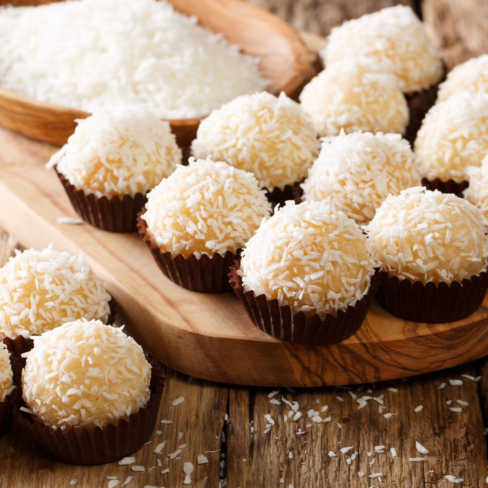

Nossos Produtos
Brigadeiro Clássico
O tradicional doce de festa feito com chocolate belga.

Beijinho de Coco
Docinho de leite condensado com coco ralado e um toque de cravo.
Camafeu de Nozes
Um clássico refinado, envolto em fondant e decorado com noz.
Mini Bolo de Cenoura
Com cobertura generosa de chocolate caseiro.
Trufa de Maracujá
Recheada com creme de maracujá e envolta em chocolate branco.
Brownie da Vó
Molhadinho por dentro, com pedacinhos de nozes e muito chocolate.
Nossa História
A Delícias da Vó nasceu em uma pequena cozinha do interior de Minas Gerais, onde Dona Lurdes, carinhosamente conhecida como Vó Lurdes, começou a fazer doces para presentear os netos e vizinhos.
Com o tempo, os doces ganharam fama e começaram a ser vendidos em feirinhas locais. Em 2020, a família decidiu abrir a primeira loja, mantendo as receitas originais e todo o carinho da vó.